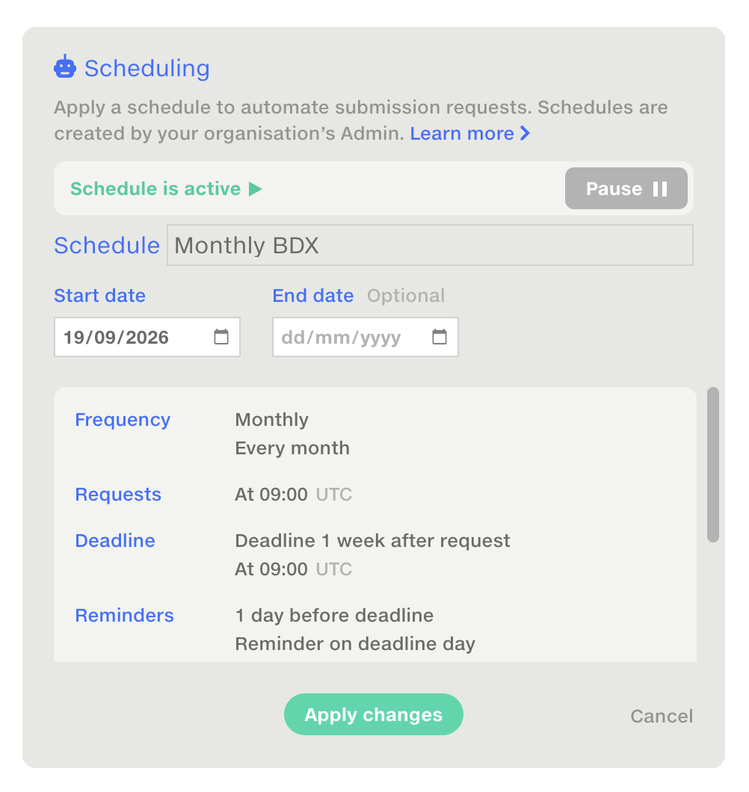

Problem
We’d automated the data processing, but not the process
Quantemplate automated insurance data processing, but requesting, chasing and moving files still relied on email or cumbersome integrations.
Across 150 trading partners submitting monthly, we identified 18,000 manual steps a year. Our aim was to automate everything after the supplier’s upload.
Design decisions
Step 1Modelling the whole workflow
I mapped the journey from request to onward distribution, including late submissions, wrong files and validation failures. This showed what could be automated and where human judgement remained essential.
Step 2From Data Drop to Data Network
My first concept, Data Drop, offered an unauthenticated, one-time upload link. Mapping the workflow exposed its limits: links would still get lost in inboxes, resubmissions needed coordination, and partners had no shared activity record.

I proposed Feeds: persistent connections between organisations, with authenticated users, schedules and submission history. It addressed the whole workflow and opened a path to a wider network.
Step 3Simple to submit, flexible to manage

Roles for humans and robots alike
A Robot User makes automation visible and auditable
More
Owners and managers configure Feeds; submitters upload data; viewers use it in pipelines. Automation needed its own identity so it could run without a person present and remain traceable.
I introduced the Robot User. It needs access to the source Feed and pipeline, plus permission to write the output dataset. Its runs are recorded in the history.
At setup, a “Share with Robot User” prompt identifies missing access, including dependent documents. Users without sharing rights can ask the document owner to grant it.

Step 4Automate everything after the upload
Trusted setup in under a minute
A partner connection starts with just their contact’s email
More
A contact’s email was enough to find their organisation or begin creating it. I proposed a logo.dev integration to fill in names and logos, reducing setup work and making requests recognisable.
Admins on both sides approve the connection, with events recorded in an admin panel. I worked through existing organisations, existing partners and different admin rights so each path stayed simple.

Reuse the schedule
Admins manage reusable schedules across Feeds. Research showed that partners often shared a reporting cadence but had different contract dates.
I made start and end dates properties of each Feed, so one contract could end without changing the schedule for others.

With a partner and schedule in place, users add subsections and start requesting data in under a minute.

The full picture, at a glance
A live dashboard of every Feed replaces tracking in spreadsheets
More
I redesigned the Feed repository as a management dashboard. Managers can see what is complete, waiting for data or overdue, while configurable reminders chase outstanding submissions.
Visible pipeline connections show what each submission will trigger and what the automation is waiting for. Both partners retain an immutable, versioned record, with avatars and organisation domains identifying who submitted each file.

Connecting the whole data chain
Data passes on from one organisation to the next, with one shared record
More
Feeds support incoming data, outgoing distribution and onward sharing. An insurer can distribute to reinsurers; a broker can receive and pass on the original submission.
Each organisation connects its own pipelines while retaining a shared, auditable source record. This provides a foundation for automated data flows across the industry.

Explore the Feed use cases.
Watch the demo
Outcome
A foundation for networked data
Feeds has handled recurring production submissions for around 18 months, processing 3.4 million rows. Suppliers upload once; the remaining workflow runs automatically.
90% fewer manual steps
Annual manual steps per organisation
Adoption continues through in-app guidance and tutorials. Sharing validation results with suppliers extends the workflow into correction, giving partners another reason to switch.
Resources
Next case study
 Image Insight
Making space for deeper reflection
Digital coaching tool that uses images and visual metaphors to prompt deeper reflection in online and face-to-face sessions.
Image Insight
Making space for deeper reflection
Digital coaching tool that uses images and visual metaphors to prompt deeper reflection in online and face-to-face sessions.